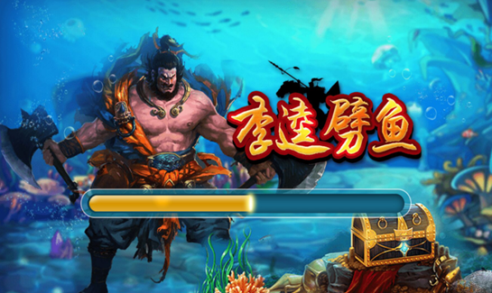

和众多休闲类棋牌游戏一样，捕鱼首先是在电玩厅火起来的，特别是在三四线城市，小县城，让很多年轻人为之着迷。笔者在上大学的时候，系里不少男生每个月一拿到生活费，必然要去电玩厅“打两炮”。这种线下电玩厅的疯狂，为线上的捕鱼游戏奠定了足够多的用户基础。而随着各地对电玩厅赌博类游戏的严打，以及智能手机性能越来越强大，更让绝大部分玩家都转移到了线上。

捕鱼类游戏作为一款休闲游戏，今天依然在棋牌游戏行业有着举足轻重的地位，除了它本身的趣味性，更重要的是它准确的游戏定位以及对人性的精准把握。游戏的定位决定了游戏的发展方向，对玩家心理的把握则决定了游戏能走多远。今天，纹桃就跟大家一起来了解一下捕鱼游戏这个话题。
捕鱼游戏定位
游戏时间定位——可以说，捕鱼游戏刚开发出来的时候定位的是电玩厅的玩家。而当捕鱼游戏移植到移动断后，它的开发方向更多的针对用户的碎片时间。玩家任何时候都可以随时玩几盘，一旦有其他事情，也可以随时中断游戏，下次有时间可以继续游戏。这也满足了如今主流玩家的需求，游戏时间碎片化。由此定位，移动平台是最佳的游戏生存平台，通过各项数据可以看出手机端的下载量要远远高于平板端和web端。
游戏受众定位——受众定位比较广，基本上3岁以上用户均可以游戏，主要是 因为其核心游戏功能非常简单（像俄罗斯方块一样），基本是各年龄段，不分男女都可以很简单就进行游戏。当然，具体到真实玩家，主要还是16—28岁的男性群体。
游戏赢利定位——基本都是采用充值金币获取炮弹，击杀不同类型鱼类获取不同数量的金币模式。一般来说鱼类击杀难度，运营商可配置，但由于一个游戏房间可能存在多个玩家，所以在玩家之间可能存在有输有赢的情况，相对来说有一定的运气成分在里面，从而让玩家更加沉迷。
人性角度分析捕鱼类游戏需求
捕鱼类游戏主要满足玩家的三种人性需求和营造了3种玩家感受，从而俘获大量忠实用户。 从人性的角度分析，除去人的基础本能和生存的基础需求外，对于娱乐和生活来说，人类最基础的需求是两种，即创造性和毁灭性，很多的感受都是从此2种人性中演化而来，往往很多游戏能够大卖也是在这2种感受上做文章，而捕鱼游戏，正是这样一类偏重于满足于玩家毁灭性的游戏，并辅助以一部分的猎奇性和成长性元素。
毁灭性——面对琳琅满目的漂亮的海底鱼类，自己的任务是去捕获它们，很大程度上激发了人性底层的毁灭特性，通过不同鱼、不同的武器、有不同的捕获几率，辅以大型毁灭性道具，充分满足玩家的毁灭性需求，从而令玩家产生游戏爽快感。
赌性——玩家付出一部分金钱，去赚另一部分金钱，其过程可能亏损，可能保本，可能赢利，捕鱼类游戏通过花费金币去捕鱼有一定成功率的模式很好的 激发了玩家的赌性，从而调动玩家对金币的饥渴感，进而围绕金币设计一系列消耗和获得系统，从而给予玩家对游戏的长期粘性。
猎奇性——通过一个大多数未曾体验过的海底世界和五彩斑斓的各色鱼类，以及等 级道具系统、黄金鱼系统、休渔期系统等，调动玩家的猎奇性，让用户总是好奇下一刻会发生什么？从而有充分的动力去进行游戏。满足玩家以上一些人性需求后，由此带给玩家以下三种感受：
美好感——通过各种系统和设定满足玩家的猎奇心和毁灭性，辅以优质的画面和音 乐效果，带过用户一种美好的感觉，仿佛通过游戏，置身于深海世界，畅快自由捕猎的感觉
操作感——当游戏调动起玩家的赌性后，玩家的核心需求是花最少的钱，获得利益的最大化，从而研究各种游戏操作技巧，选择什么样的角度攻击，如何一次性捕获更多的鱼，都成为一种游戏操作技巧，而这些游戏操作技巧构成玩家的操作感，玩家游戏的越多，自我感觉操控能力有所提升，从而更多的进行游戏
爽快感——毁灭性、赌性和猎奇性等综合构成的各色游戏系统，整体带给玩家一定的爽快感。纹桃科技致力于棋牌游戏开发13年，拥有大量开发运营经验和大批成功案例。
想打造一款迅速盈利的捕鱼游戏，欢迎咨询电话热线：18711739336
了解更多棋牌游戏行业信息：在线咨询>>


游戏产品
PRODUCTS

售后服务
SERVICE

技术支持
TECHNOLOGY

运营指导
OPERATING